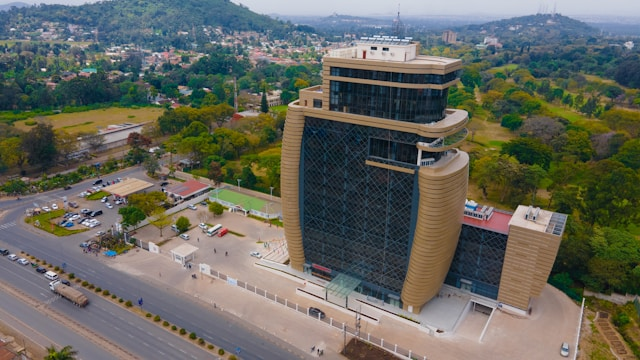
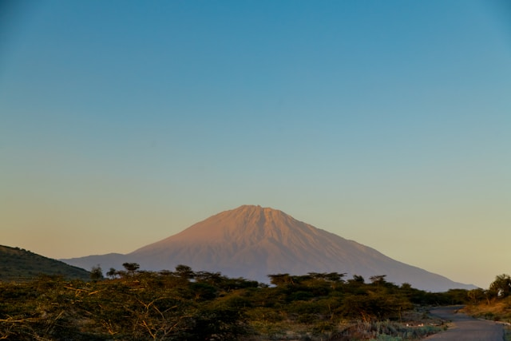
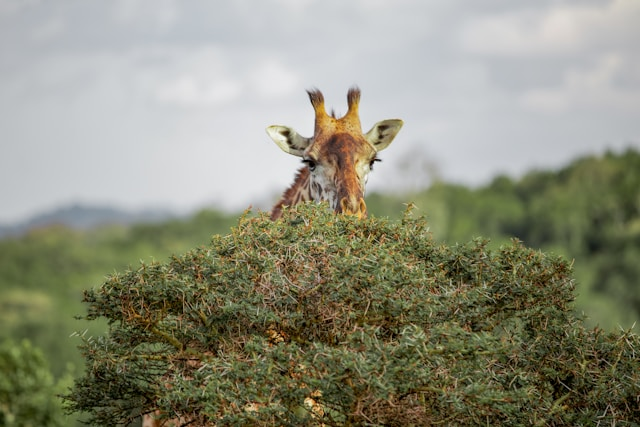
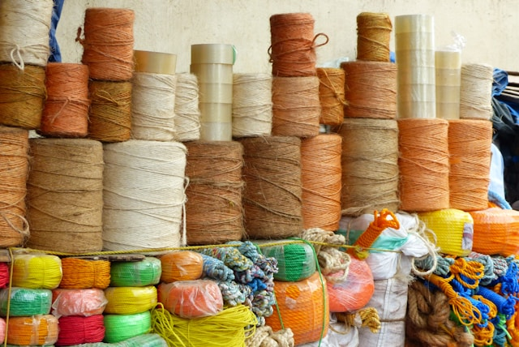

Our Heritage / Arusha Heritage

Nestled on the cool, breathtaking slopes of Mount Meru, our campus is steeped in a history as rich as the Arusha landscape itself.
Originally opened in 1946 as Ilboru Lutheran Secondary School, these grounds were chosen for their tranquil and inspiring environment. Just as Mount Meru draws explorers from around the globe, this serene setting has drawn dedicated minds for decades. Transitioning into a premier public school in 1969, it became a cornerstone of Tanzanian education, nurturing future leaders—including former Prime Minister Frederick T. Sumaye—right in the heart of the region's natural beauty.

While Arusha has blossomed into a vibrant hub for global travelers and diplomats, our campus has similarly evolved into a historic landmark in its own right. The transformation from a quiet mid-century mission center into one of Tanzania's most prestigious national schools for gifted boys is a captivating chapter in our story. We preserve a legacy of discipline and excellence while giving this beautiful space a vibrant, progressive purpose that mirrors the dynamic energy of Arusha itself.

We are privileged to be custodians of grounds where history and nature converge. Touring our campus offers a unique opportunity to experience a living legacy, feeling the same crisp mountain breeze that inspired early educators like Stewart Carlson and Dr. Anza Amen Lema. They shaped the institution's core principles of brotherhood and self-determination—values that perfectly resonate with the welcoming, communal spirit of Arusha. You can read more about these historic milestones here.

We are honoured to be continuously transforming our historic 1940s origins into a state-of-the-art educational facility, all while preserving the lush canopy and historic atmosphere native to the Mount Meru ecosystem. Significant efforts have been made to rehabilitate this magnificent site, bringing together our diverse student body under one unified, inspiring environment. It is a space that beautifully weaves together deep-rooted tradition, modern innovation, and the raw beauty of our surroundings.
Our deep appreciation for this site’s historic and geographic significance drives our commitment to maintaining its legacy. Drawing top-performing youth from across Tanzania, the school offers an exceptional learning environment that reflects the ambition and allure of the Arusha region. This ongoing evolution is a testament to how educational heritage can be revitalised, turning historic, mountain-side grounds into vibrant spaces that meet contemporary academic needs while honoring the magnificent landscape they call home.